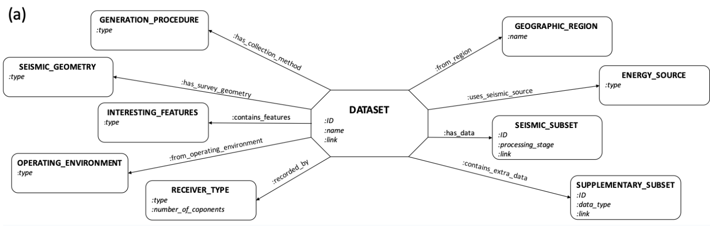

Over the years numerous geophysical datasets have been released for public usage. However, with
no central storage location or consistent description strategy, finding suitable openly
available datasets still poses a large challenge to the geophysics community. Building on the
work of the Open Subsurface Data Universe on defining schema for describing geoscientific
datasets and a list of openly available datasets compiled by the Society of Exploration
Geophysicists, GeoGraphI is an interactive graph database providing a single access point with
the necessary structured information to search for suitable datasets. Currently populated with
over 117 data subsets ranging from passive seismic to migrated volumes, and from core images
to interpreted horizons, GeoGraphI can be queried either by key information matching, such as
“Return a field seismic dataset acquired over a salt body" or by computing similarity scores,
such as “Return similar field datasets to the SEAM dataset". Being a graph database, GeoGraphI
can naturally handle a large number of relationships between different data features as well as
being able to easily adapt for future growth, either through further population of the database
or by modification of the underlying schema.
Theory

[IN PROGRESS]
Results
[IN PROGRESS]
Cite
If you found the paper useful, please cite it via:
Birnie, C., 2021, October. GeoGraphI: An interactive graph database of openly available
seismic datasets. In 82nd EAGE Annual Conference & Exhibition (Vol. 2021, No. 1, pp.
1-5). European Association of Geoscientists & Engineers.
@inproceedings{birnie2021geographi,
title={GeoGraphI: An interactive graph database of openly available seismic datasets},
author={Birnie, C},
booktitle={82nd EAGE Annual Conference \& Exhibition},
volume={2021},
number={1},
pages={1--5},
year={2021},
organization={European Association of Geoscientists \& Engineers}
}